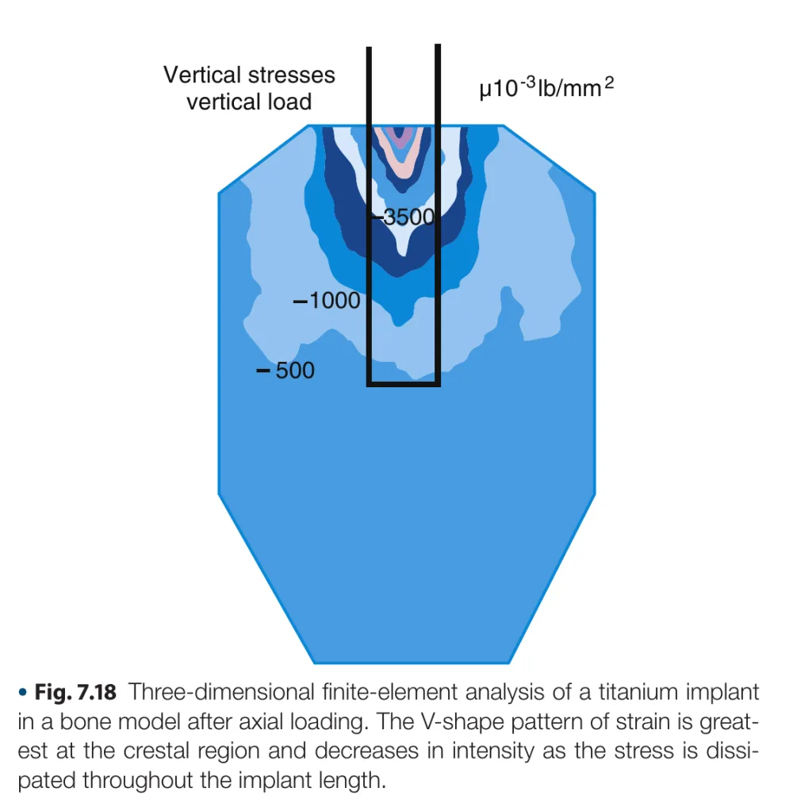
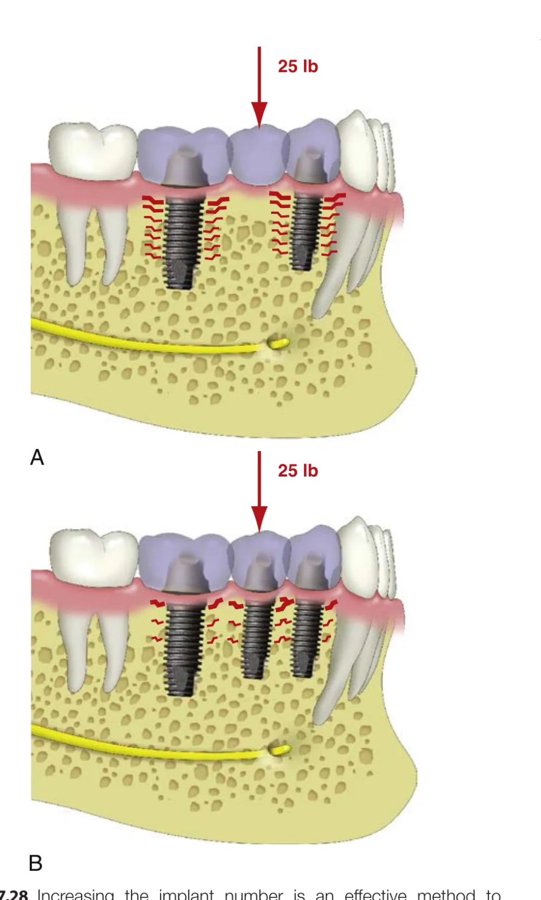

نسخه استخراجشده؛ ترجمه یا تأیید علمی انجام نشده است. وضعیت: captured
در یونیت پیش دیدی که کانتیلور یک سقف مشروط دارد و متغیر واقعی «مقدار استرس کل سیستم» است. این یونیت همان متغیر را قابل سنجش میکند.
نقطهی شروع این است: «درک علتشناسی شایعترین عوارض ایمپلنت به توسعهی یک قضیهی طرح درمان مبتنی بر استرس انجامیده است.»
به این ترتیب دقت کن — قضیه از دل عوارض بیرون آمده، نه از نظریه. یعنی هر بند آن به یک شکست واقعی در بالین پاسخ میدهد.
و دلیل اهمیتش: «موفقیت بالینی و طول عمر ایمپلنتهای داخلاستخوانی بهعنوان تکیهگاههای تحملکنندهی بار، تا حد زیادی با محیط بیومکانیکی که در آن کار میکنند کنترل میشود.»
تعریف پایه که همهچیز بر آن استوار است:
«تعریف استرس، نیرو تقسیم بر سطح کاربردیای است که نیرو بر آن اعمال میشود.»
همان معادلهی یونیت پیش — ولی حالا ببین قضیه چگونه آن را به یک ابزار تصمیم تبدیل میکند.
اصل نخست — عوامل خطر جمع میشوند:
«در نتیجه، افزایش در هر عامل نیروی دندانی، خطر عوارض مرتبط با استرس را بزرگتر میکند.»
و مهمتر: «همانطور که شمار کلی افزایش مییابد، خطرها افزایش مییابند، و طرح درمان کلی باید تغییر کند تا نیروی افزوده کاهش یابد یا سطح تکیهگاه افزایش پیدا کند.»
این جمله ساختار کل قضیه است. آن را در سه گام بخوان:
• عوامل خطر را بشمار (نه فقط نام ببر — بشمار)
• هرچه شمارشان بیشتر، خطر بیشتر
• پس طرح باید عوض شود — یا نیرو کم شود یا سطح زیاد
اصل دوم — عامل خطر منع مطلق نیست:
«یک عامل خطر منع مطلق نیست، ولی نرخ عوارض را بهطور معناداری افزایش میدهد.»
این تمایز، قضیه را از یک فهرست «انجام بده / انجام نده» به یک سامانهی درجهبندی تبدیل میکند. بیمار براکسر «ممنوع» نیست؛ بیمار براکسر طرح متفاوتی میخواهد.
و اصل سوم — چرا این روش قابل اعتماد است:
«پارامترهای بیومکانیکی پیشبینیکنندههای عالی خطر افزودهاند، چون عینیاند و میتوانند اندازهگیری شوند.»
«عینی» و «قابل اندازهگیری» — و این آنها را از قضاوت شهودی جدا میکند. دو درمانگر میتوانند بر سر شهودشان اختلاف داشته باشند، ولی نه بر سر یک اندازهگیری.

قضیه یک جهت برای طرحریزی دارد که باید بشناسی.
اصل کار این است: «بهدلیل موربیدیتی مرتبط با ایمپلنتهای بسیار کم (یعنی از دست رفتن پروتز، هزینههای مالی، از دست رفتن اعتماد بیمار)، طرحریزی درمان از بالا به پایین باید همیشه رعایت شود.»
«از بالا به پایین» یعنی چه؟ یعنی از پروتز نهایی شروع کن و به عقب برگرد تا به شمار و موقعیت ایمپلنت برسی — نه اینکه ببینی چند ایمپلنت جا میشود و بعد پروتز را با آن تطبیق دهی.
و به فهرست موربیدیتی دقت کن: از دست رفتن پروتز، هزینهی مالی، و از دست رفتن اعتماد بیمار. سومی را نباید دستکم گرفت — بازسازی اعتماد از بازسازی استخوان دشوارتر است.
و یک قاعدهی روشن:
«وقتی تردید داری، پی را بیشمهندسی کن (برای نمونه، شمار ایمپلنت را بیشتر کن تا سطح تکیهگاه بیشتر شود).»
این جمله ارزش تأمل دارد. در بیشتر حوزههای پزشکی، محافظهکاری یعنی کمتر مداخله کردن. اینجا محافظهکاری یعنی بیشتر تکیهگاه گذاشتن — چون هزینهی کمبودن تکیهگاه، بسیار بیشتر از هزینهی زیاد بودنش است.
و پرسشی برای تمرین طرحریزی:
«اگر (۱) شرایط ایدهآل استخوانی، (۲) شرایط اقتصادی بهینهی بیمار، (۳) آموزش بهینه، و (۴) بدون محدودیت زمانی داشتی، طرح درمان چه بود؟»
این یک تکنیک فکری قدرتمند است: اول طرح ایدهآل را بنویس، بعد ببین کدام محدودیت واقعی آن را عوض میکند. اگر از محدودیتها شروع کنی، هرگز نمیفهمی چقدر از ایدهآل فاصله گرفتهای.
و مفهوم موقعیتهای کلیدی ایمپلنت:
در پروتز ثابت قوس کامل، قوس را به چند ناحیه تقسیم میکنیم: «ماگزیلای بیدندان به پنج ناحیه تقسیم میشود: قدامی (لترالها و سنترالها)، کانینهای دوطرفه، و خلفیهای دوطرفه (پرمولرها و مولرها).» و «یک موقعیت کلیدی ایمپلنت، یک ایمپلنت در هر ناحیه است، یا دستکم پنج ایمپلنت کلیدی.»
مندیبل بیدندان سه ناحیه دارد — قدامی (کانین تا کانین) و دو خلفی (پرمولرها و مولرها) — پس در مندیبل دستکم سه ایمپلنت کلیدی لازم است.
در ماگزیلا پنج ناحیه، پنج ایمپلنت کلیدی. این تقسیمبندی عملکردی است نه صرفاً آناتومیک. کانین ناحیهی جداگانهی خود را دارد، چون در اکلوژن محافظ ایمپلنت دیساکلوژن از روی کانین انجام میشود و ایمپلنت در این موقعیت سود اکلوزالی چشمگیری دارد.
به این مبحث در یونیت موقعیتهای کلیدی بهتفصیل برمیگردیم.
